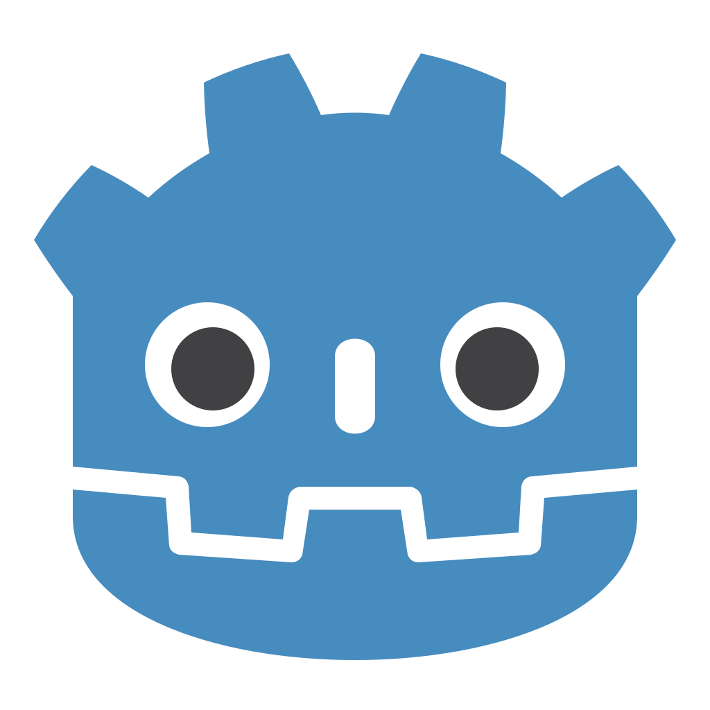

Get them through.
Build layered defense, improve future convoy hulls and engines, then bomb openings into hostile coverage.
INITIAL PLAYABLE BUILD // v0.2.0
An asymmetric real-time strategy game where every convoy is a moving objective—and every square of coastline can change its fate.
01 // MISSION BRIEF
The United States must escort scheduled cargo convoys through the Strait. Iran must detect, disrupt, and destroy them before they reach open water.
The boats never wait for you. They arrive in waves while both commanders build fixed shore defenses, expand their oil economy, establish radar coverage, and time temporary air operations. Play either faction or observe a complete AI vs AI simulation.
Build layered defense, improve future convoy hulls and engines, then bomb openings into hostile coverage.
Build firing lanes, scout with radar, strike the convoy with missiles, and raid shore infrastructure with drones.
02 // WHAT MAKES IT DIFFERENT
Every defense occupies one readable grid cell. Commit your currency, find a firing lane, and live with the position.
Free three-ship convoy waves create pressure automatically. You build around a battle that refuses to pause.
Warplanes and drone swarms follow the path you draw across enemy cells, attack once, then leave the battlefield.
Oil rigs compound income but can be destroyed from the air. Greed creates power—and a tempting target.
Radar reveals contacts and extends acquisition. A launcher without intelligence is just expensive scenery.
Ground weapons stay ashore, ships own the water, and temporary sorties cross above them. Each counter has a job.
03 // CHOOSE A COMMAND
FACTION // US
Protect an objective you do not directly control. Tanks punish boats, AA guards the shore, and unlimited hull and engine research strengthens future waves.
FACTION // IRAN
Turn the northern shore into an interdiction network. Missile launchers threaten the sea while route-based drone swarms raid vital infrastructure.
04 // FIELD INTELLIGENCE
Decrypting updates…
05 // DEPLOY
The initial playable build is available now for macOS and Windows. Keyboard and mouse required.

MADE USINGGodotGet the free game engine ↗Early development build. Your OS may ask you to confirm software downloaded from the internet.